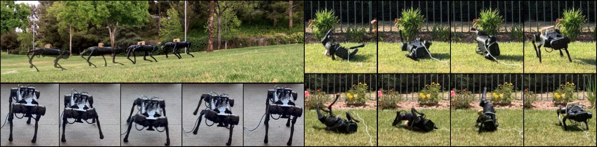

Laura Smith (1) J. Chase Kew (2) Xue Bin Peng (1) Sehoon Ha (2,3) Jie Tan (2) Sergey Levine (1,2)
(1) University of California, Berkeley(2) Google Research (3) Georgia Institute of Technology

Abstract
Legged robots are physically capable of traversing a wide range of challenging
environments, but designing controllers that are sufficiently robust to handle
this diversity has been a long-standing challenge in robotics. Reinforcement
learning presents an appealing approach for automating the controller design
process and has been able to produce remarkably robust controllers when trained
in a suitable range of environments. However, it is difficult to predict all
likely conditions the robot will encounter during deployment and enumerate them
at training-time. What if instead of training controllers that are robust enough
to handle any eventuality, we enable the robot to continually learn in any
setting it finds itself in? This kind of real-world reinforcement learning poses
a number of challenges, including efficiency, safety, and autonomy. To address
these challenges, we propose a practical robot reinforcement learning system for
fine-tuning locomotion policies in the real world. We demonstrate that a modest
amount of real-world training can substantially improve performance during
deployment, and this enables a real A1 quadrupedal robot to autonomously fine-tune
multiple locomotion skills in a range of environments, including an outdoor lawn
and a variety of indoor terrains.
@misc{
smith2021legged,
title={Legged Robots that Keep on Learning: Fine-Tuning Locomotion Policies in the Real World},
author={Laura Smith and J. Chase Kew and Xue Bin Peng and Sehoon Ha and Jie Tan and Sergey Levine},
year={2021},
eprint={2110.05457},
archivePrefix={arXiv},
primaryClass={cs.RO}
}